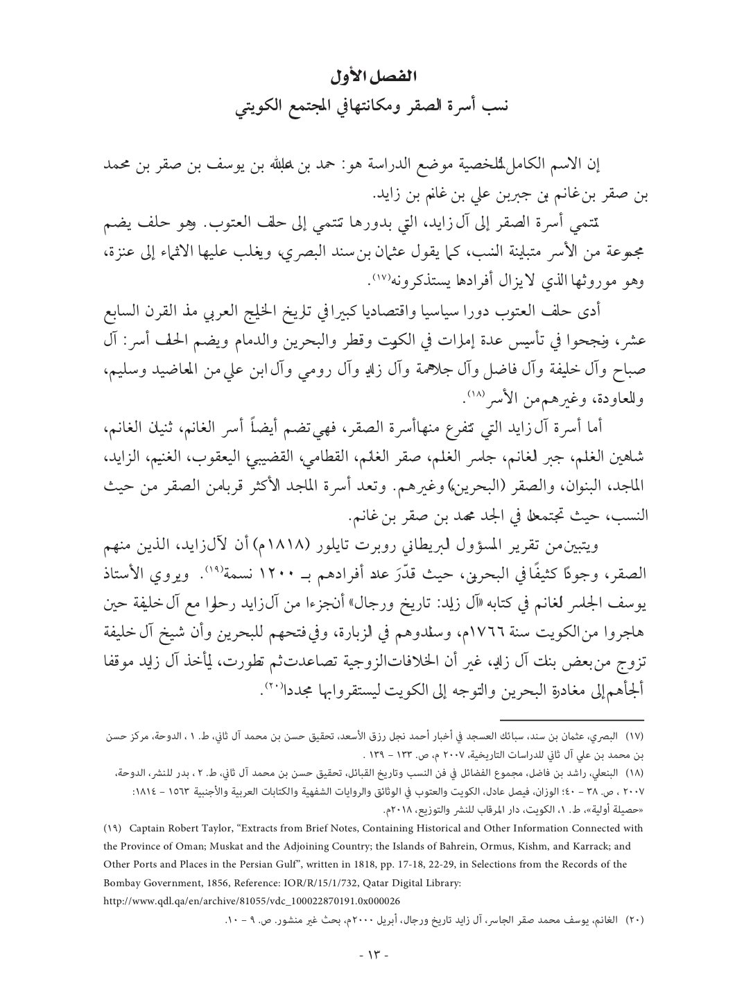

نُشر سنة ٢٠١٩ · فصل في النسب من دراسة وثائقية
القطامي من فروع أسرة آل زايد
ما هي
يعدد د. فيصل الوزان في الفصل الأول من دراسته عن حمد الصقر الأسر المتفرعة من آل زايد: الغانم، وثنيان الغانم، وشاهين الغانم، وجاسر الغانم، وجبر الغانم، وصقر الغانم، والقطامي، والقضيبي، واليعقوب، والغنيم، والزايد، والماجد، والبنوان، والصقر (البحرين). ويذكر أن آل زايد من حلف العتوب ويغلب عليهم الانتماء إلى عنزة، وأنهم رحلوا مع آل خليفة من الكويت إلى الزبارة سنة ١٧٦٦ ثم عادوا إلى الكويت.
أهميتها
مصدر منشور ثانٍ مستقل عن كتاب آل زايد يضع القطامي ضمن أسر آل زايد إلى جانب الغانم، وهو النسب نفسه الوارد في الجزء السابع من معالم مدينة الكويت القديمة.
من المقصود
العائلة مذكورة بالاسم: القطامي.
صور الصفحات

النص الأصلي
ملاحظات
ص ١٣ من الكتاب. ويستند المؤلف في رحيل آل زايد إلى البحرين إلى بحث يوسف محمد صقر الجاسر الغانم «آل زايد: تاريخ ورجال»، أبريل ٢٠٠٠، غير منشور.
أسماء أخرى
المصادر
د. فيصل عادل الوزان، تجارة النقل البحري في الكويت من خلال سيرة حمد عبدالله الصقر، مركز البحوث والدراسات الكويتية، ٢٠١٩، ص ١٣. ونسخة محفوظة في درايف العائلة.
مرجع الأرشيف
- Al-Wazzan 2019, p. 13 · نسب أسرة الصقر ومكانتها في المجتمع الكويتي
كيف كُتب هذا النص: النص العربي كما طبعه الكتاب. الترجمة الإنجليزية من Claude، يرجى مراجعتها.
افتح في الموقع التفاعلي